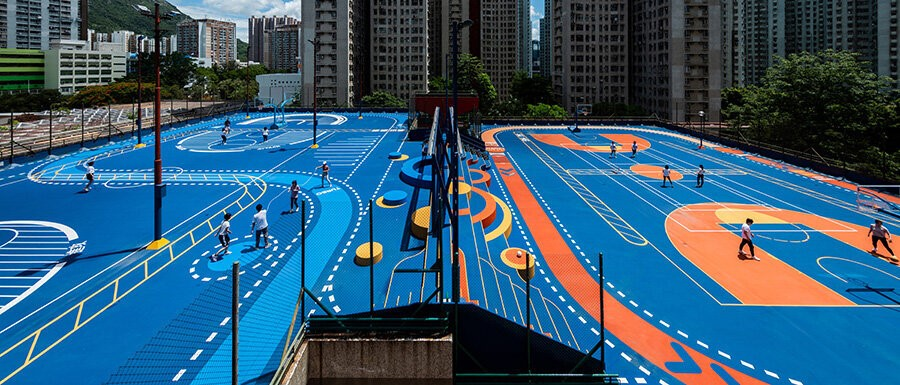

Have you ever felt confused and overwhelmed finding where to play your specific sport around Hong Kong?
Hong Kong is a large and diverse city with a wide variety of different sports scattered amongst the bustling city. This website was made to help find your sport near you!
- Enter the sport you are interested in locating around Hong Kong.
- Tick the boxes to filter your preferences for the type of sport conditions.
- If you want to revisit a certain location, favourite it so you can come back to it.
Interactive map placeholder